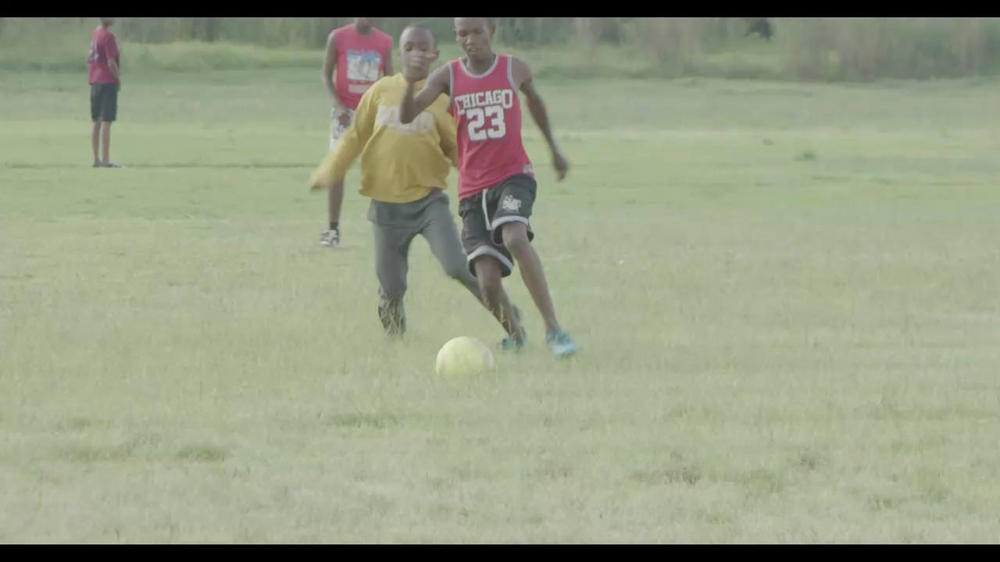
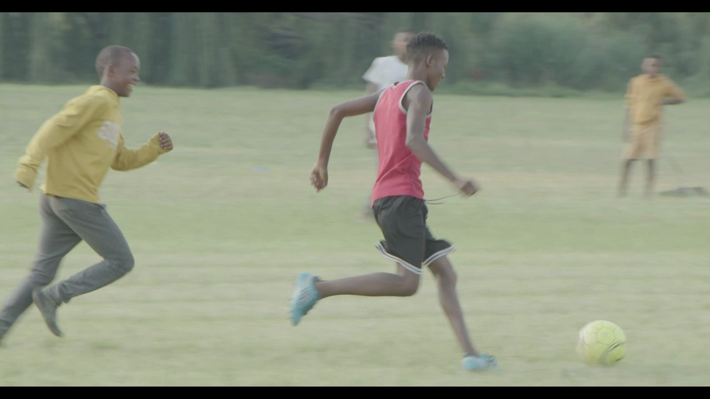
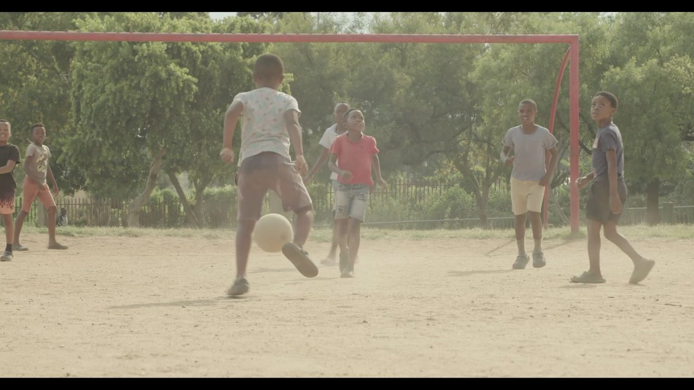

AIM film · model layer: open-source YOLO11 pose & detection, run frame by frame — not an AIM Labs validated result
Footage from the AIM film: street and grassroots football. A lens reveals what an off-the-shelf computer-vision model detects in each frame: players, body keypoints, tracks and the ball.
AIM World · Research & Innovation Division
Innovation builtfor football.Intelligencebuilt to scale.
AIM Labs explores emerging technology, validates new ideas and translates research into practical football intelligence for players, coaches and organisations.
Every frame of a clip is labelled: each player boxed and tracked, uncertain detections marked in red. Thousands of these clips are what models are benchmarked against. Shown: AIM film, off-the-shelf model output — illustrative.
03 / Why AIM Labs exists
Innovation matters when it improves the game.
01
Explore what is possible.
One 8-second clip. Every joint of every player, every frame — a cloud of raw data.
02
Test what is credible.
Uncertain points are flagged, not hidden. What survives is one player we can trust.
03
Translate what works.
The player's movement becomes a path, a shape, a moment — then one cue a coach can use.

0data points
On the pitch · illustrative cue
“Go at him with pace — then cut. Don't slow down before the touch.”
04 / Research & Innovation
Research grounded in the game.
Every area starts with a football question. Technology is the method, not the headline — and work in progress is labelled as exactly that.
How we label the work
ResearchA question being explored
PrototypeBuilt to learn, not to ship
PilotTested in a real environment
In validationBenchmarked and challenged
BetaLimited, monitored use
LiveIn production across AIM World

Specimen · AIM film · 1v1 · f145
One moment, eight questions
Every research area looks at the same real frame — and asks something different of it.
R.01
Computer vision
Can standard video become reliable, structured information about movement and ball interaction?
In validationVideo → events
R.02
Biomechanics & movement
Which measures of turning, balance and coordination genuinely inform development?
ResearchMovement quality
R.03
AI & machine learning
Where can models support pattern recognition and decision support without overstating certainty?
PrototypeDecision support
R.04
Football intelligence
How does a technical output become meaningful to a coach on a Tuesday session?
PilotContext layer
R.05
Behavioural science & learning
What kind of feedback actually changes how young players train and learn?
ResearchFeedback design
R.06
Data & decision science
How do we compare players fairly while keeping uncertainty and context visible?
In validationBenchmarking
R.07
Product experimentation
Which new workflows earn a place in real products — and which should stop here?
BetaWorkflows
R.08
Research collaboration
Where do universities, clubs and specialists strengthen the evidence?
Every frame a coach watches can be five layers deep. Pull them apart, pick one, then put the picture back together.
00 · Capture
01 · Detect
02 · Pose
03 · Track
04 · Context
AIM · Session review · suggestion
Possession changed 5 times in 8 seconds. Show the clip — then train the first touch under pressure.
KeepEditDismiss
05 · Human
AIM film · off-the-shelf model output · illustrative
Select a layer · move across the stack to tilt it
Mobile computer vision
Player intelligence
Coach & session intelligence
Performance video
Permissioned profiles
Organisational insight
Integrations
Human football expertise
06 / From research to application
Explore. Test. Validate. Apply.
Not every experiment becomes a product — and that is the point. Pick a project and watch it run the eight validation gates. Most stop — each stop is a decision made on evidence, and what it learned feeds the next question.
Project passport Illustrative portfolio
01 / 18
Computer vision
Project
Question
—
01Research question
02Benchmark & test
03Real-world trial
04Review & challenge
05Bias & robustness
06Human oversight
07Deployment decision
08Learning loop
Live in AIM World
Why it stopped
—
↺ Fed back—
The whole portfolio · 18 questions in, 2 applied · hover a thread to open its passportswipe the chart · tap a thread to open its passport
Stage 01
Explore
Identify football questions, emerging technology and approaches worth investigating.
Stage 02
Validate
Test reliability, usefulness, limitations and real-world relevance through structured research.
Stage 03
Translate
Turn validated learning into models, workflows, features, products or IP.
Stage 04
Scale & extend
Apply proven capability across AIM World — and selectively beyond it.
07 / Proof & Partnerships
Evidence before scale.
Claims sit next to the evidence that supports them. Status, method and partner role are always stated — never implied.
Claim 01In validation
Phone video can measure players and the ball reliably.
A claim on its own is just a sentence.
Evidence · claim 01In validation
Same model, four AIM clips. Reliability holds in daylight — and drops at night. We publish the drop.
ClipBall found · % of framesPerson conf.
1v1 · day88%0.88
Sand · day93%0.88
Park · day57%0.87
Match · night4%0.74
MethodOff-the-shelf detector run on every frame of four AIM clips
Minutes a coach spent finding and sharing clips after each session, during a 12-week academy pilot.
Minutes per session · placeholder
Before42
With review15
Method12-week pilot, academy environment, self-reported time logs
Partner[Club partner — role: real-world trial]
LimitsOne age group, one club so far
Technology that goes further
Extending proven technology — selectively.
AIM technology can strengthen a complementary business. It is never licensed to one that competes with AIM World. Try the test.
Who wants AIM technology? Illustrative examples
✓ Complementary
✕ Direct competitor
Complementary
—
M.01
Technology licensing
Defined capability inside a partner's product, with clear scope and IP protection.
M.02
Embedded & integrated
AIM intelligence, APIs or workflows inside complementary platforms and devices.
M.03
Joint development
Partner brings hardware, distribution or data. Labs brings research and technology.
M.04
Co-branded deployment
Used selectively, without diluting ownership or differentiation.
08 / People & Standards
Innovation with responsibility.
Our principles are not a policy page. They change what the technology is allowed to show — here is one frame of young players, with each principle applied.

6 / 6 principles onHow AIM Labs ships
Responsible by designSwitch a principle off to see what it protects.
The people behind it Portraits to come
Portrait
Name SurnameHead of ResearchComputer vision
Portrait
Name SurnameLead EngineerML systems
Portrait
Name SurnameFootball SpecialistCoaching & development
Portrait
Name SurnameBehavioural ScientistLearning design
09 / Insights
Better questions. Better intelligence.
Research notes, explainers and project learning — each one labelled with the status of the work it describes.